Current state of DeFi
Gísli Kristjánsson
September 6, 2020Use cases
- Stable coins
- Spot and derivates trading
- Credit facilities and money markets
- Insurance
- Prediction markets
- Staking
Liquidity mining ⛏
Early protocols used order books but automatic market makers are winning
- Dharma vs Compound
- 0x vs Uniswap
Liquidity is provided by locking tokens in a pool 🎱
tokenA * tokenB = K
$$ y = \frac{k}{x} \implies \Delta P = \frac{dy}{dx} = - \frac{k}{x^2} $$
LPs receive liquidity tokens
Optionally LPs receive a governance token
The main metric to watch is the Total Value Locked
| 2020 | TVL $MM |
|---|---|
| Jan | 690 |
| Feb | 1,000 |
| July | 2,000 |
| Sept | 9,000+ |
Building blocks 🧱
Pegged tokens
| wBTC | BTCB  |
| tBTC 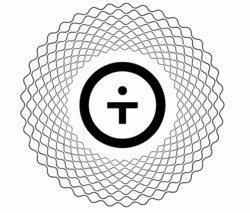 | renBTC |
Oracles
ChainlinkProtocols 🧬
MakerDAO
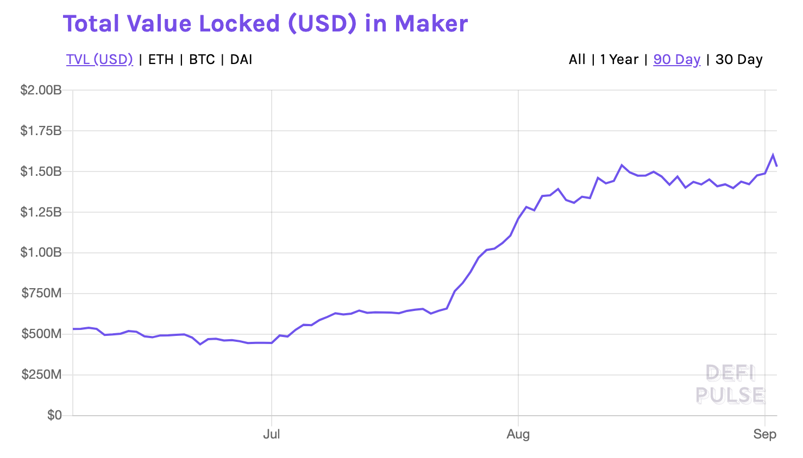DAI
$DAI is decentralized stable coin with an associated governance token $MKRDAI
$DAI is a debt which is minted when a supported token is locked in a CDPThe collateral is released when the debt is paid back
Debtors must maintain a 150% margin
Synthetix 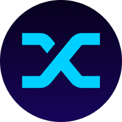
Synthetix is a generalized version of $DAISynths can track any asset
LPs receive the $SNX governance token
Ampleforth
$AMPL is a digital currency that adjusts supply daily based on market conditionsUniswap
Exchange AMM where pools contain 50/50 split of tokens in a pairPools can source liquidity from other pools
V1 not upgradable but V2 has admin key for fees
Native price oracles but initial versions attackable
Uniswap
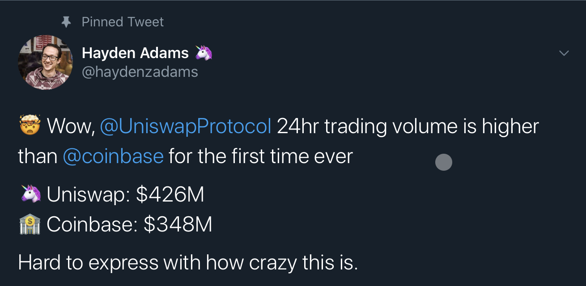Balancer
Generalized version of UniswapPools contain up to 8 tokens with any distribution
LPs receive $BAL token
Mooniswap
Exchange AMM protocol by 1inchShares slippage fees with LPs
Curve 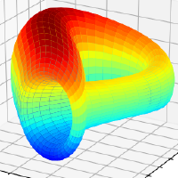
Specialized exchange for stablecoinsThe sBTC, WBTC, renBTC, BTCB are “stablecoins” amongst themselves
Beats most CEXes on liquidity
Liquidity is supplied to Compound, Synthetix or yEarn where it generates more income for LPs
1inch
DEX aggregatorBest rates by splitting orders among multiple DEXes
Compound
Compound is a money market AMMLPs get the $COMP governance token
AAVE 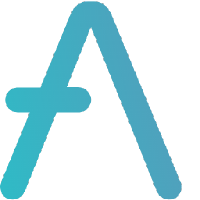
Compound is a Similar to compoundPioneered flash loans
dydx 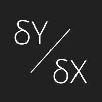
Derivaties exchange and margin tradingyEarn 
DeFi yield aggregator
The most current optimal strategy to maximize returns
Roboadvisor
Profit switching lender to optimize lending yields
yearn
The yearn.finance ecosystem is controlled by the $YFI token
$YFI a completely valueless 0 supply token. We reiterate, it has 0 financial value
$YFI rallying by more than 4,000% within days of release.
Yield farming 👨🌾
the degens are just yolo-ing in!
The names are more meme 🚀
Rube Goldberg machine for money 🤯
Mostly unaudited code 😱
Often anonymous teams 🤡
The power of composability 🧩
YAM 
A stablizing reserve currency protocol (see Ampleforth)
Fair distribution
$YAM uses yCRV as the reserve currency, which is roughly a $1 peg
$500MM TVL in 24h
Smart contract bug caused hyperinflation (off by 1018) within 48h
YAM
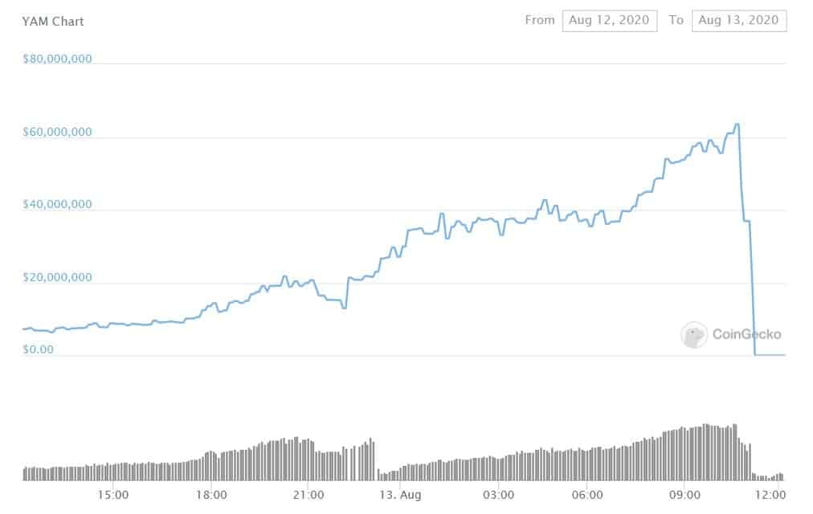
SushiSwap
Promoted itself as an “evolution” of Uniswap$700MM TVL in 72h and then $1.1B
Chef Nomi exits with $13MM of Sushi’s development fund
Sold half of the $27MM dev fund that he said he wouldn’t touch without community approval
Ironically uses Uniswap to convert $SUSHI to $ETH
SushiSwap
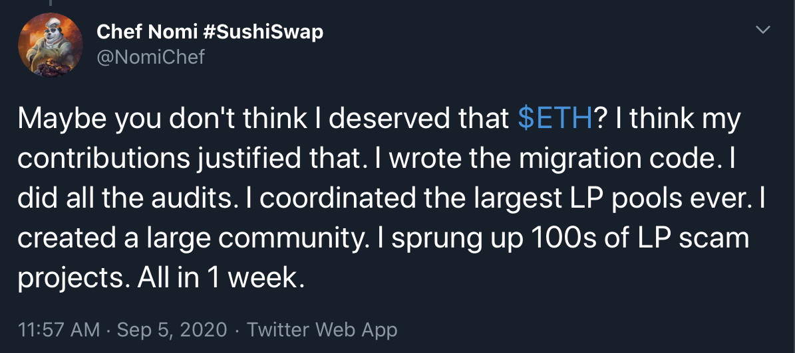Kimchi
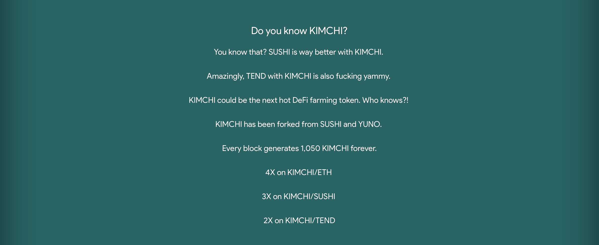Cream 
Based on Compound
Deployed to Binance Smart Chain
yETH 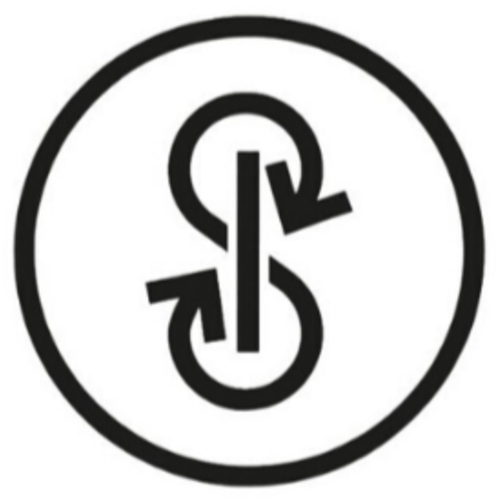
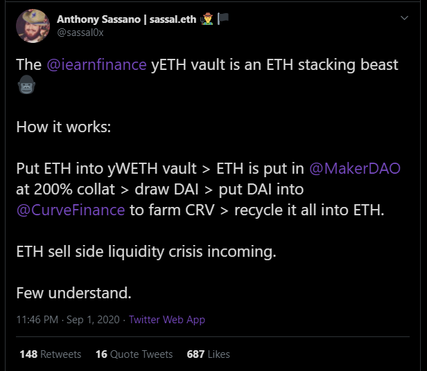yETH
Latest vault from yEarn$14MM TVL in 48 hours
Uses MakerDAO’s OSM to delay liquidation by 1 hour
Staking 🥩
Next block is chosen via combinations of random selection and stake
Nothing at stake problem solved with slashing
Security relies on staking rewards
Attacker could offer stakers more attractive yield than the PoS protocol
DeFi lending markets directly compete with staking